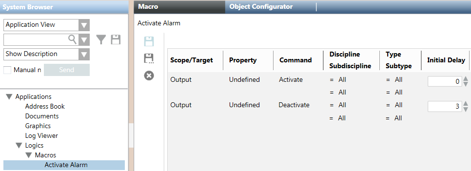

Configuring Manual Alarm Activation via FS20 Control Panel Module
You want to create a macro to manually activate an alarm on fire panels from the management station, for example in case of evacuation. To trigger the alarm, the FC20 panels must be equipped with an HTRI or FDCIO interface module.
- In the HTRI or FDCIO module, wire an output pin to an input pin configured for alarm signaling.
- In the FS20 configuration tool (FXS2002), create a cause/effect control logic and link the effect to the output.
- Complete the Description field of the HTRI or FDCIO input to reflect the manual alarm condition you intend to generate.
- Create and then import the new configuration file into the FS20 network of the management station.
- Create a macro to activate the FS20 output with the following commands:
- Activate, with no initial delay.
- Deactivate, with initial delay of 3 seconds, to remove the alarmed condition and allow for acknowledging and resetting the alarm.
